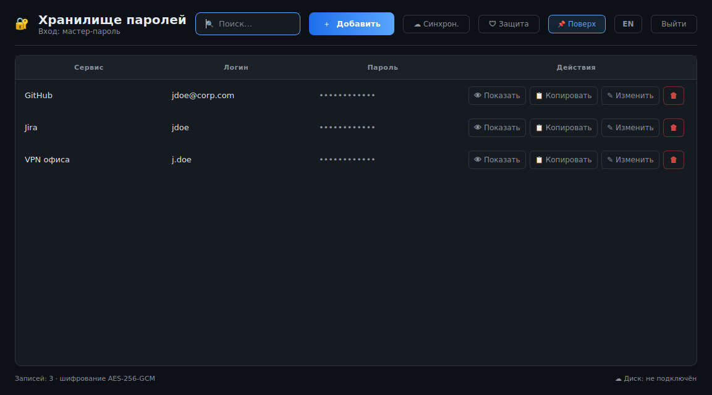

🔐 ZaPassKa
Менеджер паролей для Windows и Linux. Пароли хранятся на вашем компьютере в зашифрованном виде, резервная копия по желанию уезжает в ваш Google Диск.
Что умеет
- Хранит пароли, логины и названия сервисов в зашифрованном виде
- Открывается доменной учётной записью или мастер-паролем, на выбор
- Генерирует надёжные пароли
- Копирует пароль в буфер и сам очищает его через полминуты
- Синхронизирует записи между компьютерами через ваш Google Диск
- Интерфейс на русском и английском

Как работает резервная копия
Копия попадает в скрытую служебную папку вашего Google Диска, доступную только этому приложению. Туда уходят исключительно зашифрованные данные: ключ шифрования остаётся на ваших компьютерах и никуда не передаётся. Приложение запрашивает единственное разрешение, работу со своей собственной папкой, и не видит ваши документы на Диске.
Важно знать
Мастер-пароль нигде не хранится. Если его забыть, записи не восстановит никто, включая автора приложения. То же относится к доменному паролю: при его смене приложение один раз спросит предыдущий пароль, и этот момент лучше не пропускать.